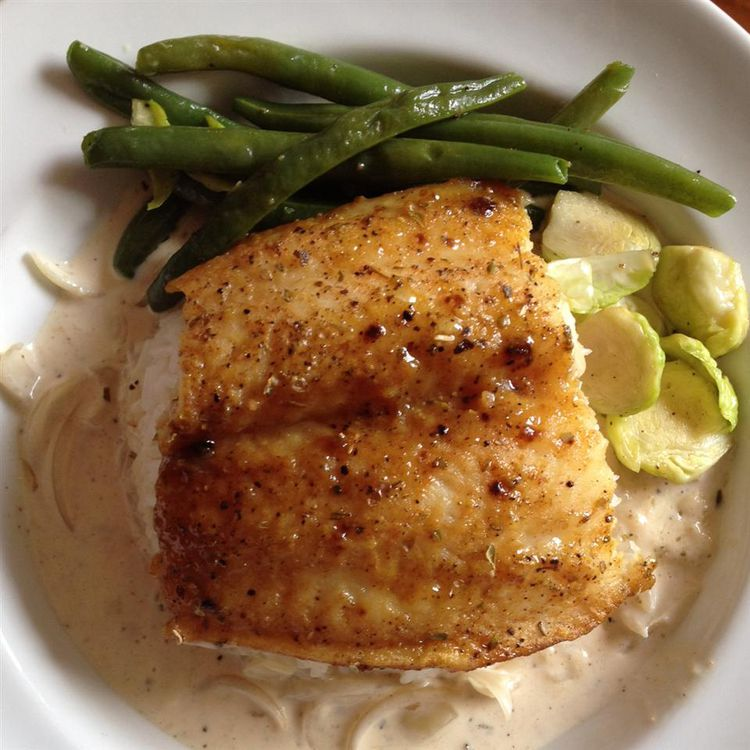

Salmon with Brown Sugar Glaze

This brown sugar salmon recipe with Dijon is my favorite. I make
this quick and easy dish way too often. Serve with rice and broccoli.
Ingredients
- Cooking spray.
- 4 boneless salmon fillets.
- Salt and ground pepper.
- 1/4 cup packed light brown sugar.
- 2 tablespoons Dijon mustard.
Instructions
-
Preheat the oven broiler and set an oven rack about 6 inches from the
heat source. Grease the rack of a broiler pan with cooking spray.
-
Season salmon with salt and pepper, then place on the prepared broiler
pan. Whisk together brown sugar and mustard in a small bowl; spoon
mixture evenly over salmon.
-
Cook under the preheated broiler until fish flakes easily with a fork,
10 to 15 minutes.
Return to the main page